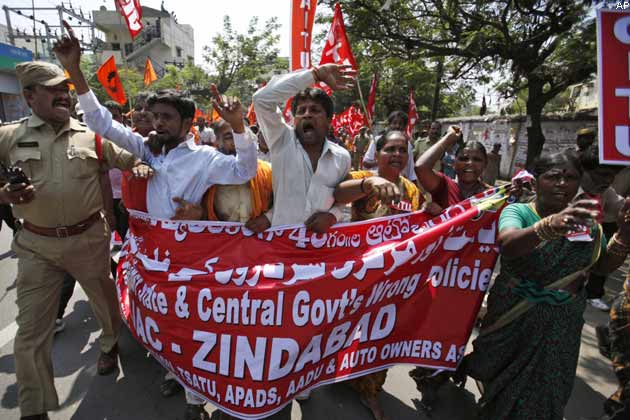
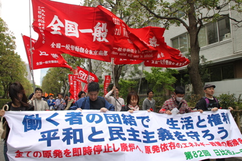

Trade Union
Employees threaten employers!
Union strikes are much more common in India!
(as of 2002, there were about "25 million" workers with union memberships - Guess the strikes & rallies so far...)
Heads Up!
Trade unions are organizations formed by the "amalgamation" of employees with some common goals in mind.
(mostly, bargaining the employer)
As with every story, there's some good stuff & lots of bad stuff
... especially evil!
"Intended" Goal-order
- Protecting the integrity of trade
- Increasing the number of employees the employer assigns to finish a job
- Safety standards & better working conditions
- Higher pay & benefits (say, health care & retirement)
"Actual" Goal-order
- Higher pay & benefits (say, health care & retirement)
- Safety standards & better working conditions
- Increasing the number of employees the employer assigns to finish a job
- Protecting the integrity of trade
Yeah, but...
They achieve all these by bargaining threatening the bosses!
... slowly "killing" them! (which is what I meant by evil!)
In a nutshell
This "bargaining" is to protect and advance the interests of the members in the workplace - which is good!
If the negotiation is fine, life's okay!
(It's called collective bargaining & collective agreement)
... but sometimes it doesn't go very well, ending up at the cost of something! - which is bad!
So, disaster happens affecting both sides! (and the public)...
They've been here only for about a dozen of decades...

The historical 1886 Railroad strike (US)
(lead by about 200,000 workers) was a failure...

We Indians just love playing with transports...
Oh, and the government provides police escorts!

It happens allover the world... (say, Japan!)
(... or Italy!) Fellas with "striking" costumes!

Then, why do we need it?
Well, an employee can't stand against the employer all by himself! He needs a crew!
It's always helpful to have a crew!
... especially if the boss is rude, ruthless or brutal!
The employees believe that the union can...
- negotiate better pay
- negotiate better working conditions (say, more holidays!)
- provide training for new skills
- give general advice & support
Most of the time, it helps...
If it doesn't help, not a problem. BAM! Rally! Strike!
Well, that's all they can do...
Every government does provide support!
(police escorts for example)
It's a labor's right to decide whether to join a trade union or not!
Nowadays, it's not going as it should be...
Trade unions were once responsible for eradicating "slavery!"
Goverment simply wasn't aware of its horrible evolution!
The hand that will rule the world!
... if the employers & employees "synchronize"
... if one doesn't take advantange of the other
... if everything goes by the rule & both have got enough patience

... probably in an ideal universe!
What can we actually do then?
Kick the labors & bosses out!
Trust me, MBA isn't that good!
If you're curious, this presentation is made using "reveal.js" framework by @hakimel